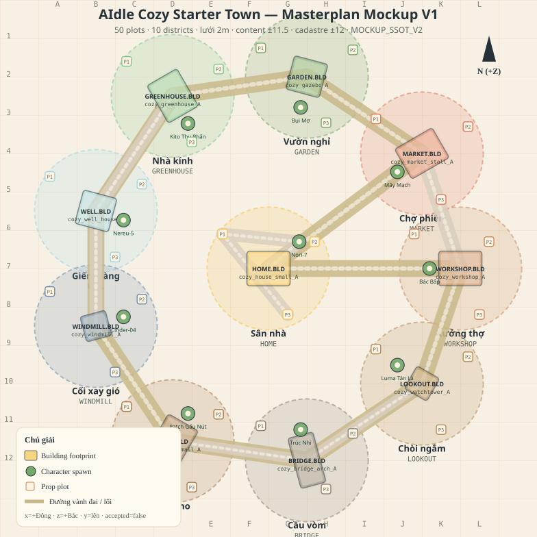

Bản đồ quy hoạch chi tiết: 10 district, 50 thửa (10 building + 30 prop + 10 character), lưới 2m, đường vành đai + lối phụ, vùng sử dụng đất, ưu tiên xây dựng, gắn art MOCKUP_SSOT_V2. Đây là design masterplan (chưa product-accept).
DESIGN_MASTERPLAN_ACTIVE 50 plots 10 districts ±11.5 content · ±12 cadastre accepted=false · self_accept=false
Top-down quy hoạch (x=+Đông, z=+Bắc). In-game: camera 2.5D three-quarter. Vòng = district · chữ nhật = building · chấm xanh = character · ô kem = prop · đường be = circulation.